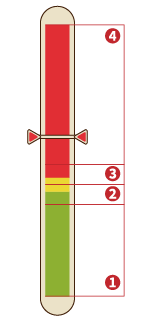
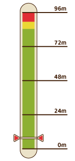

年度节日
矿石镇举办的活动是居民们重要的社交场所。
记住基本的特征，和居民们逐渐加深交流吧
全年举办的活动
全年中，举办活动的节日有18种，节日的日期都是固定的。
大部分是在特定的场地举办，但也有像「春季感恩节」和「南瓜节」这样的，居民来自己的牧场拜访的活动。
想提高居民亲密度的话，就尽量参加活动，并和参加活动的居民说话吧。
另外，节日当天基本上全部的店和设施都会关门，前一天或者后一天是休息日的话，就会连续休息2天。
没有调休真好啊！
节日时商店休息
镇上的商店和设施有固定的休息日，但节日时，除班先生的小店外，其他商店都会歇业。
即使节日从夜间开始，商店也会全天关门。如果需要商品，建议提前购买。
但是，春季感恩节、冬季感恩节、南瓜节等无固定召开场所的节日，商店仍然正常营业，可正常购物。
活动的相同之处
- 能提高和来参加活动的居民的好感
- 能得到与节日内容及结果相对应的获胜奖品和道具
- 节日当天肯定是晴天。需要报名的话，前一天也会是晴天
- 居民的行程和平常有所不同，除商人班先生的小店之外全天关店
节日一览
参加竞技性大赛的话，在前一天报名吧！
主人公能够参加「春季赛马」和「斗鸡节」之类的竞技性的节日活动。
想要参赛的话，活动前一天上午主办方来找自己时，选择「参赛」吧。
就算不参赛，只要活动当天按时去举办会场，也能够参加活动。
让动物或是宠物参赛的时候，从报名到活动结束为止，会暂时离开牧场由主办方照顾。
※ 活动前一天的早上，走出家门主办方就会出现邀请你参赛。但如果用「飞行石」出门就会错过。
※ 选择让动物参赛的话，那一天就不能照顾它了。
结束时间之前进入就能够参加
在特定会场举办的活动，只要在举办时间内进入会场，就能参加这个活动。
活动结束以后可以自由行动的时间，就是活动结束的时间。
PM 6:00结束的场合，直接在自己家恢复自由活动。
PM 9:00以后结束的节日，回家后会直接睡觉，直到第二天的AM6:00起床。
※ 直至活动结束前的1分钟，都可以进入会场参加，所以有效的利用时间吧！
※ 只要进入了会场，直到活动结束为止都无法出去。
提高与全部的参与者亲密度的机会
在节日时，可以提高和居民的亲密度和好感度。
在会场举办的活动的话，和参加活动的居民说话可以提高亲密度。
主人公参赛并获胜的话，亲密度会再次上升。
居民访问牧场的活动的话，给予对方对应的礼物，就能大幅度提高亲密度和好感度。
※ 和参加活动的居民说话，除了平常的说话的+1亲密度之外，还会多提升一些亲密度。
获胜奖品和特产
主人公能够参赛的活动获胜后能够得到奖品。
像「年糕大会」和「新年荞麦面」那样的只要参加就能获得特产的活动，
还是尽量参加一下比较好。
- 春季赛马 / 秋季赛马：力量果实
- 入海节：力量果实
- 斗鸡节：斗鸡节冠军奖杯
- 评牛节：评牛节冠军奖杯
- 软绵绵节：软绵绵节冠军奖杯
- 新年荞麦面：荞麦粉
节日事件
【春1日】年糕大会
- 天气：晴
- 时间：PM6:00～AM12:00
- 场所：广场
- 备注：
第二年春开始可参加
与托马斯对话选择「开始」
- 登场人物：
托马斯、兰、赛巴拉、艾丽、梅、优、达特、狄克、玛娜、哥兹、札克、卡特
- 结果：
背包有空格时获得「年糕」
在广场与居民对话亲密度+5（仅一次）
大家一起吃年糕庆祝新年的节日。
节日结束后可以获得「年糕」，所以在背包里留出空位，PM6:00～AM12:00期间前往广场吧。
由于游戏开始时是春2日，所以只有第二年开始才能参加。
【春14日】春季感恩节（主人公赠礼）
- 天气：-
- 时间：-
- 场所：-
- 备注：
向结婚候补或配偶赠送「曲奇」或「巧克力曲奇」
- 登场人物：-
- 结果：
- 主人公未婚：受赠结婚候补好感度+1000，亲密度+20（仅限一次）
- 主人公已婚：配偶好感度+1000（仅限当日首次）/配偶以外亲密度+20
感恩节可向结婚候补赠送「曲奇」和「巧克力曲奇」。
与普通礼物不同，对方的好感度与亲密度会大幅上升。
另外，主人公婚后也可向配偶以外的人赠礼，但只能增加亲密度。
【春18日】春季赛马
- 天气：晴
- 时间：AM10:00～PM6:00
- 场所：广场
- 备注：
有成年马
前一天（春17日 AM6:00～PM12:00）从自宅出门，选择「报名」，将马交付给托马斯
当天与托马斯对话选择「开始比赛」
- 登场人物：
里克、珀布莉、穆奇、赛巴拉、狄克、玛娜、托马斯、哈里斯、杰夫、莎夏、卡莲、达特、兰、札克
- 结果：
广场上对话的居民亲密度+5（仅限一次）
节日前一天如果有成年马，则可作为选手参赛。
第1年无法参赛，但可以从托马斯处以1枚100G的价格购买赛马券，竞猜冠军马，若猜中可按倍率获得奖牌奖励。
第2年开始可以参赛。
「真实之玉」、「力量果实」只能交换1次，交换后奖品替换为「连衣裙」、「香水」。
自己参加比赛，会安排在第三轮出场，可以用奖牌交换不同价格的奖品，多余的奖牌可以保留到下次赛马。
| 奖品 |
奖牌 |
奖品 |
奖牌 |
| 真实之玉 |
1000 |
防晒霜 |
30 |
| 力量果实 |
900 |
项链 |
20 |
| 礼服 |
250 |
胸针 |
18 |
| 香水 |
150 |
钻石 |
14 |
| 面膜 |
42 |
松茸 |
10 |
| 化妆水 |
35 |
金刚石 |
4 |
赛马：加油的时机很重要
4匹马一起比赛，能第一个冲到终点就能获胜。
虽然马的训练度越高越容易获胜，但即使训练度只有一半也可以试试拿下冠军。
开始以后按 加速
加速
马旁边的气泡变红了的话停止加速，等变成黄色或者绿色的时候再次加速。
重点是调节加油的次数，保持比其他马领先一点点。
训练度和好感度的影响
- 训练度越高基本速度越高
- 好感度度越高通过加油的加速效果越好
※ 气泡变红之后加油也不会加速，所以等待回复吧。
※ 变成黄色以后加油一次停一会，变成绿色之后缩短停顿时间。
【春22日】美食节
- 天气：晴
- 时间：AM10:00～PM6:00
- 场所：广场
- 备注：
前一天（春21日 AM6:00～PM12:00）从自宅出门，托马斯会告知美食节的信息
「参加比赛」美食家出题后，PM12:00～PM6:00期间在家做好料理带回广场
与托马斯对话选择「带来了」→「是」
- 登场人物：
托马斯、美食家、莎夏、卡莲、玛娜、哥兹、卡特、札克、莉莉娅、达特、兰、里克、多特
- 结果：
广场上对话的居民亲密度+5（仅限一次）
比赛烹饪手艺的节日。美食家出题后回家做菜，做好后带来广场与托马斯对话开始评选。
判断标准为通过料理的体力回复量与疲劳回复量折算而成的料理值。
美食节比赛题目
仅对符合主题的料理进行举例。
- 【第一年】果汁 水果牛奶，水果欧蕾，草莓牛奶等
- 【第二年】点心 甜薯点心，巧克力曲奇，年轮蛋糕等
- 【第三年】面包 三明治，葡萄面包等
- 【第四年】乌冬面 乌冬面，咖喱乌冬面等
- 【第五年】饭类 香菇饭，松茸饭，炒饭等
第六年开始上述题目随机出题
料理值越高，美食家的评价也越高。
料理值的算法
体力回复量+疲劳度回复量=料理值
推荐参赛的料理
放松茶、冰激凌、三明治、咖喱乌冬面、蛋包饭
【夏1日】入海节
- 天气：晴
- 时间：AM10:00～PM6:00
- 场所：海滩
- 备注：
有成年宠物
前一天（春30日 AM6:00～PM12:00）从自宅出门，选择「报名」，把宠物交给札克
当天与札克对话选择「开始比赛」
- 登场人物：
托马斯、杰夫、莎夏、凯、珀布莉、札克
- 结果：
海滩上对话的居民亲密度+5（仅限一次）
比赛宠物训练度的飞盘大会，获胜可获得「力量果实」（仅限首次）。
扔两次飞盘，只要有一次接住就算成功，根据飞盘飞行距离决定胜负。
获胜所需距离因训练度而异。
飞盘：仔细注意蓄力条的滑标
停住移动的滑标投出飞盘，宠物能够接住的话距离会被记录。
比赛将举行2次，以好的那一次的成绩来竞争排名。
获胜所必要的距离根据宠物的训练度和不同，以能停在下图中的②的位置为目标吧。
成功率只有50%，所以挑战前记得存档。

停止位置和成功/失败率
- ④③之上的范围：失败率100%
- ③红和绿的分界线稍微上方的范围：成功率30% / 失败率70%
- ②红和绿的分界线稍微下方的范围：成功率50% / 失败率50%
- ①②之下的范围：成功率90% / 失败率10%

推荐飞行距离
黄色区域是训练度最大时绿色范围的上端
滑标向上时，在红绿分界线稍微下方停住
在蓄力条中央附近成功的话大概会是48m左右
获胜所必须的推荐距离
| 训练度 |
距离 |
| 0~10% |
16m |
| 11~20% |
20m |
| 21~30% |
29m |
| 31~40% |
39m |
| 41~50% |
46m |
| 51~60% |
52m |
| 61~70% |
61m |
| 71~80% |
66m |
| 81~90% |
72m |
| 91~100% |
86m |
【夏7日】斗鸡节
- 天气：-
- 时间：AM10:00～PM6:00
- 场所：广场
- 备注：
有成年的鸡
前一天（夏6日 AM6:00～PM12:00）从自宅出门，选择「报名」，把鸡交给里克
当天与里克对话选择「开始比赛」
- 登场人物：
里克、穆奇、赛巴拉、狄克、托马斯、珀布莉、达特
- 结果：
广场上对话的居民亲密度+5（仅限一次）
在斗鸡小游戏中给鸡加油鼓气，把对手从台上吓落，且连续胜利3次即可获胜。
获胜的鸡好感度8 以上即可产出「金蛋」。
以上即可产出「金蛋」。
斗鸡：记住声援的时机
在鸡接近对方的时候按来声援的话，能把对方向后逼。
持续下去，把对方逼出场地的话就能获胜。
斗鸡共3次，全胜之后才算冠军。
鸡的好感度不高的话，会出现不面向对手的状况。
所以最少也得把好感度提高到6。
有时对手会自己走到场地边缘，所以记得不要一股脑的声援，注意方向和距离再按。
碰到对手并面朝对手时才是声援的好时机，没有朝着对手的时候，不要声援等待面朝对手
注意自己的鸡儿的朝向和与对手的距离。等到这么近的时候按声援吧。
比对手更快的声援很重要。
看到 之后就晚了，所以要以和对手的距离&朝向做出正确的判断。
之后就晚了，所以要以和对手的距离&朝向做出正确的判断。
【夏20日】评牛节
- 天气：-
- 时间：AM10:00～PM6:00
- 场所：广场
- 备注：
有未怀孕的成年牛
前一天（夏19日 AM6:00～PM12:00）从自宅出门，选择「报名」，把牛交给穆奇
当天与穆奇对话选择「开始评审」
- 登场人物：
里克、珀布莉、穆奇、梅、巴吉尔、玛丽、托马斯、优、多特、艾丽、卡特、布兰登
- 结果：
广场上对话的居民亲密度+5（仅限一次）
出场的牛按好感度进行评比，8以上即可优胜。
获得胜利需要通过繁殖提高好感度上限。
获胜的牛可以产G级及以上的牛奶。
【夏24日】烟花大会
- 天气：-
- 时间：PM6:00～PM9:00
- 场所：海滩
- 备注： 可在海滩上与居民对话选择「邀请」（仅限主人公未婚时）
- 登场人物：
里克、格雷、多特、克里夫、凯、布兰登、卡莲、艾丽、兰、珀布莉、玛丽、珍妮弗
- 结果：
海滩上对话的居民亲密度+5（仅限一次）
- 主人公未婚时：邀请的居民若好感度在
 以上，便可以两人一起看烟火
以上，便可以两人一起看烟火
- 主人公婚后：可以和配偶一起看烟火
- 谁也没邀请：自己看烟火
在矿石沙滩上与特殊对象以外的结婚候补对话试试吧。
若结婚候补的好感度在以上，可以两人一起看烟火。
如果谁都不满足条件，就会变成独自一人看烟火。
【秋3日】音乐节
- 天气：晴
- 时间：PM6:00～AM12:00
- 场所：教堂
- 备注：
前一天（秋2日 AM6:00～PM12:00）从自宅出门，选择「参加」
当天与卡特对话选择「开始」
- 登场人物：
梅、玛丽、优、杰夫、莎夏、卡莲、艾丽、卡特、兰
- 结果：
教堂里对话的居民亲密度+5（仅限一次）
大家一起欣赏音乐的节日。秋2日早晨卡特会前来牧场拜访。
选择「参加」，当天便会以演奏者的身份参与音乐节。
主人公负责吹陶笛。享受优雅的时光吧，演奏是自动进行的，不会乐器也没关系。
即使拒绝演出，也可以当天前去教堂聆听演奏。
表演结束后，时间自动推进到第二天。
【秋9日】收获节
- 天气：晴
- 时间：AM10:00～PM6:00
- 场所：广场
- 备注：
前一天（秋8日 AM6:00～PM12:00）从自宅出门，托马斯会告知收获节的事
当天手持要交付的食材与托马斯对话，选择「带来了」
- 登场人物：
玛娜、安娜、玛丽、托马斯、莎夏、卡莲、艾丽、卡特、达特、兰、哥兹
- 结果：
广场上对话的居民亲密度+5（仅限一次）
大家一起做料理的节日。前去参加一定要带好食材，用好吃的食材做出美味的汤。
但是如果加入「毒蘑菇」「红草」之类难吃的食材，会毁了整个味道。
结束后会自动回家。
好吃的与难吃的
- 好吃的食材：增加体力、减少疲劳度的食材
- 难吃的食材：减少体力、增加疲劳度的食材
【秋13日】赏月
- 天气：-
- 时间：PM6:00～AM12:00
- 场所：山顶
- 备注：
- 主人公未婚时：结婚候补好感度以上，选择「一起赏月吧」
- 主人公婚后：配偶在山顶等候
- 登场人物：-
- 结果：
选择「一起赏月吧」，结婚候补好感度+1000
赠送「赏月团子」的对象好感度+1000
结婚候补好感度以上，就可以在圣母山顶赏月约会。
如果有多人满足条件，则好感度最高的一位会在山顶等候。
主人公婚后则会与配偶一起赏月。
赠送「赏月团子」可以进一步增加好感度。
【秋18日】秋季赛马
- 天气：晴
- 时间：AM10:00～PM6:00
- 场所：广场
- 备注：
有成年马
前一天（秋17日 AM6:00～PM12:00）从自宅出门，选择「报名」，将马交付给托马斯
当天与托马斯对话选择「开始比赛」
- 登场人物：
托马斯、穆奇、赛巴拉、札克、哥兹、格雷、玛丽、达特、艾丽、多特、卡特、莉莉娅、里克、哈里斯、狄克
- 结果：
广场上对话的居民亲密度+5（仅限一次）
获胜后可获得「力量果实」（春秋赛马共计仅1次）。
比赛流程及奖品与春季赛马相同，秋季赛马也在第二年开始可以参赛。
马的训练度越高跑得越快，亲密度越高的马加速效果越好。
平时不要懈怠照料与训练，努力取得胜利吧。
其他有关赛马的信息参考「春季赛马」吧！
【秋21日】软绵绵节
- 天气：晴
- 时间：AM10:00～PM6:00
- 场所：广场
- 备注：
有未怀孕、未剃毛的成年产毛动物（羊、羊驼、安哥拉兔）
前一天（秋20日 AM6:00～PM12:00）从自宅出门，选择「报名」，把动物交给穆奇 当天与穆奇对话选择「审查开始」
- 登场人物：
穆奇、里克、安娜、哈里斯、梅、卡莲、哥茨、托马斯、格雷、杰夫、珍妮弗
- 结果：
广场上对话的居民亲密度+5（仅限一次）
评比产毛动物养育成果的活动。报名条件是未怀孕、未剃毛，所以剃毛要等到赛后。
和赛牛节一样，出场的动物按好感度进行评比，8以上即可优胜。
获胜的动物可以产G级及以上的毛，与收入提升息息相关。
另外，获胜可以获得成就。
【秋30日】南瓜节
- 天气：晴
- 时间：因人而异
- 梅：AM6:00～AM7:00
- 优：AM8:00～AM9:00
- 珀布莉：AM10:00～AM11:00
- 场所：牧场
- 备注：-
- 登场人物：
梅、优、珀布莉
- 结果：
获得点心类料理的情况下，梅、优亲密度+20，珀布莉好感度+1000
AM6:00开始每隔2小时，梅、优、珀布莉会前来要甜品。
因为料理题材要求是点心，去杂货店事先准备好巧克力吧。
若珀布莉是配偶，则只有梅和优会上门。
【秋30日】南瓜节（婚后）
- 天气：晴
- 时间：PM6:00～AM12:00
- 场所：自宅
- 备注：
主人公已婚
结婚对象不是女神或河童
- 登场人物：-
- 结果：
配偶好感度+1000，孩子（如有）亲密度+20
若主人公已婚，除了白天会有孩子来要甜品，晚上也有活动。
PM6:00～AM12:00回家，配偶会和你一起吃点心。
但是，若配偶是女神或河童，则不会发生此事件。
可以享用配偶亲手制作的点心。
【冬14日】冬季感恩节（结婚后）
- 天气：-
- 备注：
主人公已婚
背包有空位
就寝时触发
- 登场人物：-
- 时间：全天
- 场所：自宅
- 结果：
可从配偶处获得「巧克力」
配偶好感度 以上时，可获得「蜜渍橙皮巧克力」
以上时，可获得「蜜渍橙皮巧克力」
向主人公赠送「巧克力」、「蜜渍橙皮巧克力」后，配偶好感度+1000 配偶好感度以上，主人公在之前的春/冬感恩节中未获得过「戒指」的，将代替礼物送给主人公「戒指」
和春季感恩节相同，配偶会在主人公睡觉时在背包里放礼物，所以睡前不要忘记给背包留空。
第二天根据好感度不同，可以获得「巧克力」或「蜜渍橙皮巧克力」，也可能获得「戒指」。
【冬14日】冬季感恩节（主人公赠礼）
- 天气：-
- 备注：
向结婚候补或配偶赠送巧克力系礼物
- 登场人物：-
- 时间：-
- 场所：-
- 结果：
- 主人公未婚：
受赠结婚候补好感度+1000，亲密度+20（仅限一次）
- 主人公已婚：
配偶好感度+1000（仅限一次）/配偶以外亲密度+20
冬季感恩节主人公也可以向结婚候补赠送巧克力系点心。
如果不能做料理，可以在杂货店购买「巧克力」。
和春季感恩节相同，可以向配偶或结婚候补赠送。
满怀平日里的感激之情向配偶赠礼吧！
【冬24日】星夜祭（结婚前）
- 天气：晴
- 备注：
主人公未婚
结婚候补好感度以上
满足上述条件时，前一天（冬23日 AM6:00～PM12:00）从自宅出门，托马斯会来牧场把信给你
接受信上的邀请
- 登场人物：-
- 时间：PM6:00～AM12:00
- 场所：因人而异
- 珀布莉：养鸡场1楼
- 玛丽：巴吉尔家
- 艾丽：爱莲家
- 卡莲：杂货店
- 兰：旅馆1楼
- 珍妮弗：帐篷
- 多特：医院1楼
- 克里夫：果树园储藏间1楼（在果树园打工）/旅馆2层（未在果树园打工）
- 里克：养鸡场1楼
- 格雷：锻冶屋
- 布兰登：伐木之家
- 结果：
一起过节的结婚候补好感度+2000
一起过节的村民亲密度+30
（和里克、珀布莉、玛丽、卡莲、兰共度时，额外增加30亲密度）
好感度以上的结婚候补会在前一天通过托马斯写信邀请。
如收到多份邀请，则可从中选择其一。
男性候补除里克外，其他人会赠送「戒指」。
女性候补仅有珍妮弗会赠予「戒指」。
如有结婚候补之外的村民在场，他们的亲密度也会上升。
【冬24日】星夜祭（结婚后）
- 天气：晴
- 时间：PM6:00～AM12:00
- 场所：自家
- 备注：
主人公已婚
- 登场人物：
结婚对象/知己、孩子（如果有）
- 结果：
配偶好感度+1000，孩子（如果有）亲密度+20
如果已婚，节日前夕不会有人来信。
和南瓜节相同，PM6:00～AM12:00回家，配偶会和你一起共度星夜祭。
如果婚前没有在星夜祭中获得过「戒指」，此时便可获得。
【冬25日】星夜赠礼
- 天气：-
- 时间：PM9:00～AM12:00
- 场所：自家
- 备注：
在自家挂袜子处挂好「袜子」
- 登场人物：
托马斯
- 结果：
如果挂了空袜子，则获得以下物品之一：秘银、山铜、月亮石、沙漠玫瑰石、亚历山大石。
托马斯亲密度+20
通过「爱莲的袜子」事件获得袜子，挂在自家挂袜子处。
在PM9:00～AM12:00期间就寝，托马斯就会前来在袜子里放入礼物。
如果没有挂袜子，托马斯也会来，但什么都不会发生。
【冬30日】新年荞麦面
- 天气：晴
- 时间：PM6:00～AM12:00
- 场所：广场
- 备注：
和托马斯对话选择「开始」
- 登场人物：
托马斯、哥兹、卡特、狄克、玛娜、杰夫、莎夏、兰
- 结果：
背包有空格时获得「荞麦粉」
在广场与居民对话亲密度+5（仅一次）
一年结束，大家一起吃荞麦面的节日。PM6:00～AM12:00前往广场吧。
节日结束后可以获得「荞麦粉」，不要忘记在背包里预留空位。
如果参加此活动，便不能参加山顶的「跨年夜」。
这是获得「荞麦粉」的珍贵机会！
【冬30日】跨年夜
- 天气：晴
- 时间：AM12:00～AM4:00
- 场所：山顶
- 备注：-
- 登场人物：
克里夫、达特、安娜、巴吉尔、玛丽、赛巴拉、格雷
※ 克里夫仅在留在镇上的情况下才会参加
- 结果：
在山顶与居民对话亲密度+5（仅一次）
冬30日深夜，即跨年夜，前往圣母山脉的山顶，可以观赏美丽的新年日出。
和村民们说话便可自动推进事件。和山顶上的村民们对话提升亲密度，等待朝阳的升起吧。
山顶日出尤为特别，一定要体验一次！
 以上
以上